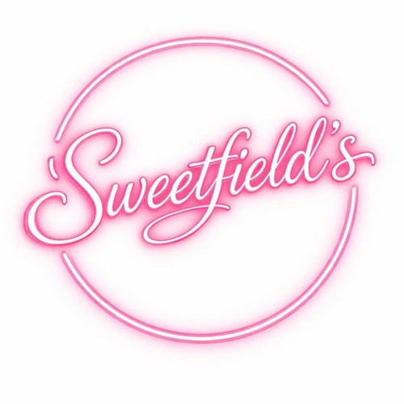
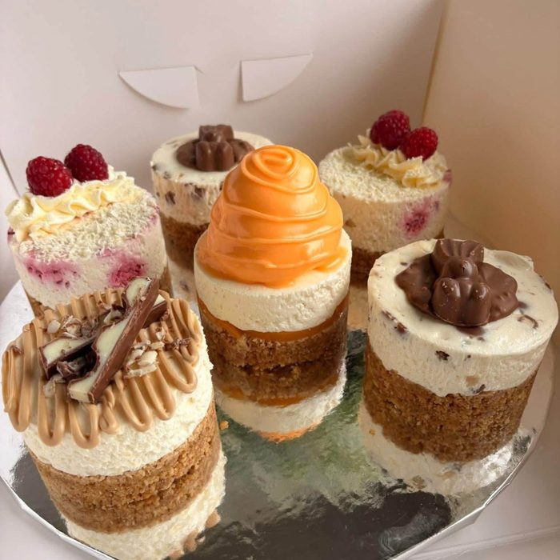
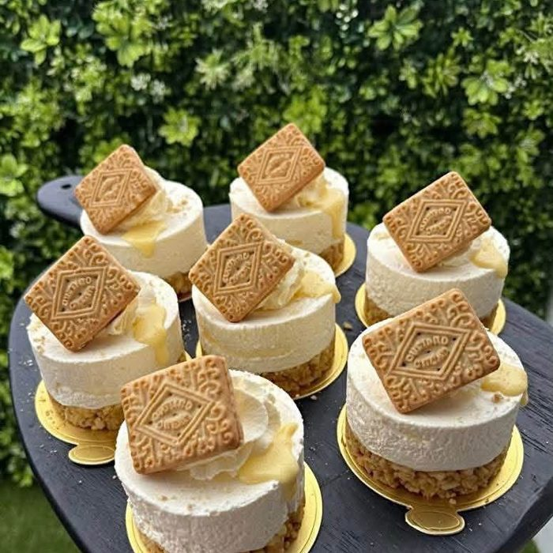
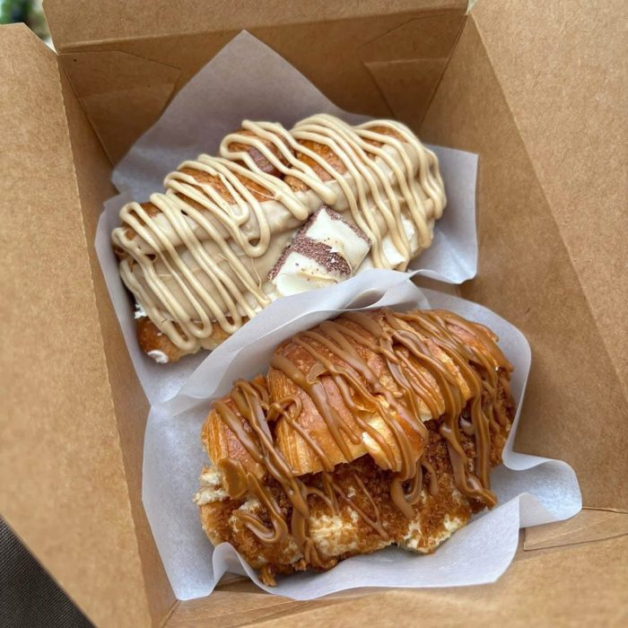
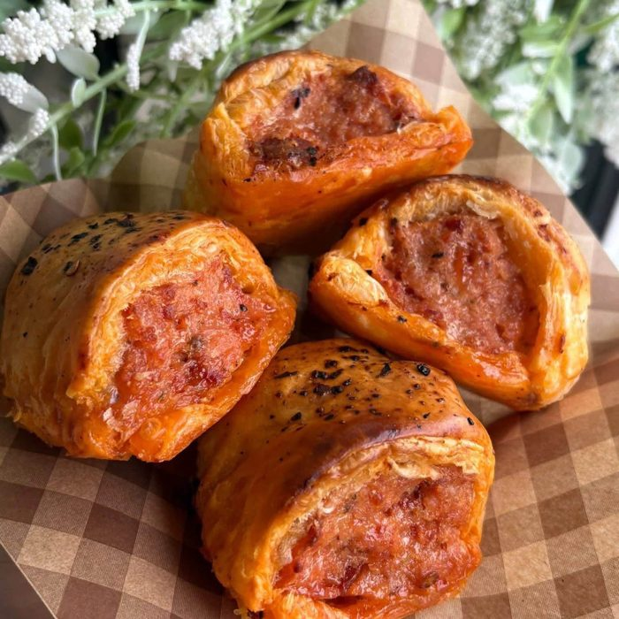

Our bakery belongs to Sweetfield’s. It began in lockdown as Say Cheesecake, baked at home and on the shelves of Fenwick Food Hall in Newcastle within no time. Six years on, Sweetfield’s bakes from our kitchen for cheesecake lovers and cheesecake haters alike: look for her fridge and shelves in the deli, and for her bakes on our menus.




Celebration cakes and orders go straight to Laura:
Message on Facebook